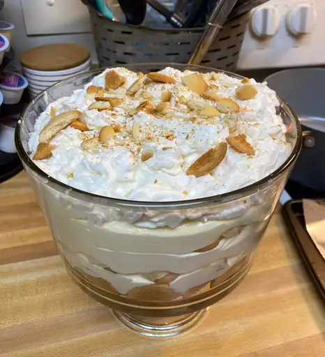

Banana Pudding
Return Home

Description
Banana pudding (sometimes banana cream pudding) is a pudding generally consisting of layers of sweet vanilla flavored custard, vanilla wafers and/or ladyfingers and sliced fresh bananas placed in a dish and served, topped with whipped cream or meringue.
It is commonly associated with Southern US cuisine, but it can be found around the country and specific areas. Furthermore, it closely resembles an English trifle in that it is assembled in layers and includes custard, fruit, sponge cake, and whipped cream.
Ingredients
- 2 cups cold milk
- 1 (5 ounce) package instant vanilla pudding mix
- 1 (14 ounce) can sweetened condensed milk
- 1 tablespoon vanilla extract
- 1 (12 ounce) container frozen whipped topping, thawed
- 1 (16 ounce) package vanilla wafers
- 14 small bananas, sliced or to taste
Steps
- Gather all ingredients.
- Place milk and pudding mix in a large bowl; beat with a whisk for 2 minutes. Blend in condensed milk until smooth.
- Stir in vanilla, then fold in whipped topping.
- Layer wafers, banana slices, and pudding mixture in a glass serving bowl.
- Chill. When ready to serve top with extra crushed wafers.
- Enjoy!